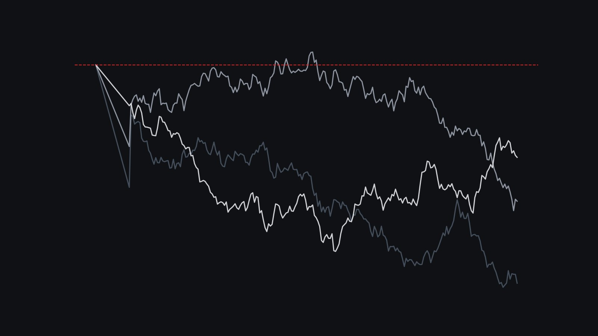
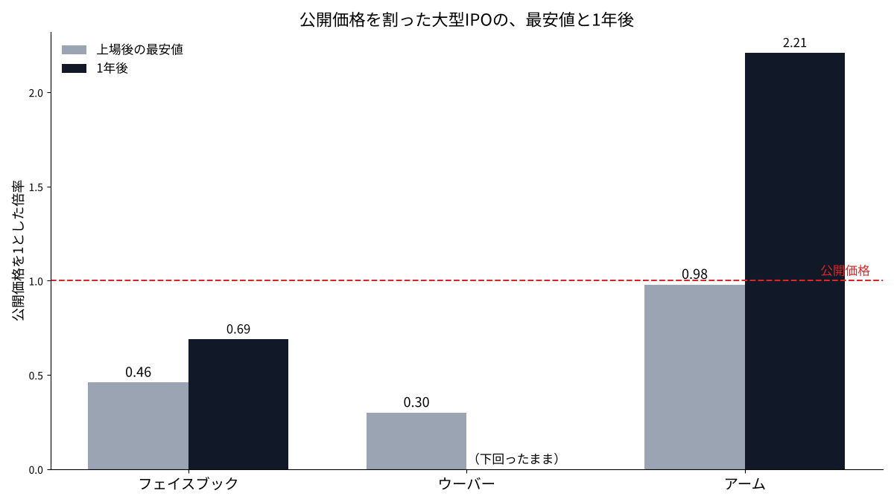
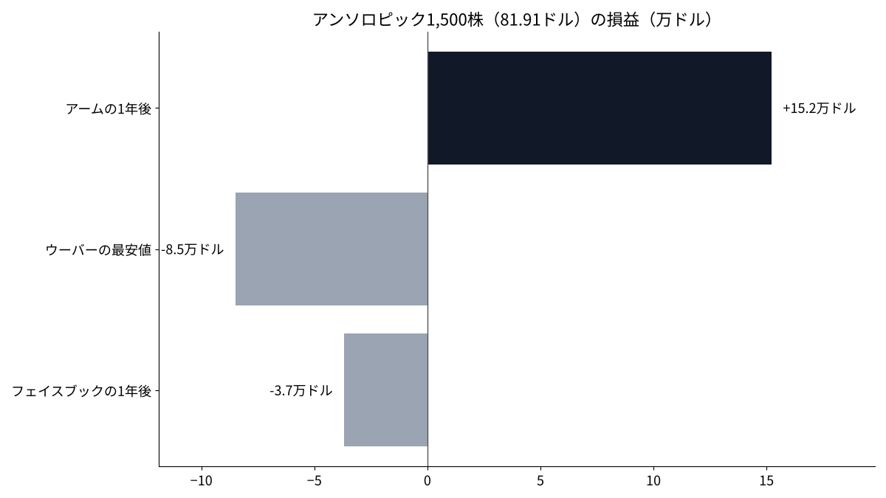

アンソロピックが公開価格83ドルを割った。フェイスブック・ウーバー・アームは1年後にどうなったか――SEC開示とRitterのIPO統計で検証
米国のAI企業アンソロピックが、11月24日のニューヨーク市場で公開価格83ドルを初めて割り、終値は81.91ドルとなった。場中には76ドルまで売られ、初値111.33ドルからは約26%低い。
大型のIPOが公開価格を割ると、「上場は失敗だった」という声が出やすい。だが、過去に同じ経験をした大型株は少なくない。
本稿の問いは、上場直後に公開価格を割った大型テック株は、1年後にどうなったのか、である。
- フェイスブックは1年後も公開価格38ドルの31%下にいたが、売上は1年で55%増えていた。公開価格を回復したのは上場から約14か月後だった。
- ウーバーは初日から公開価格45ドルを割り、2020年3月には13.71ドル（公開価格の約30%）まで下げた。公開価格の下にいた期間は約4年に及んだ。
- アームは上場1週間で公開価格51ドルを一時割ったが、1年後には公開価格比で約2.2倍になった。上場直後の値動きは、1年後の値段をほとんど教えてくれない。

問いと背景
まず言葉をそろえる。公開価格（IPO価格）とは、上場の前に引受会社が機関投資家などへ株を売る値段である。初値は、上場の日に市場で最初についた値段を指す。
IPOでは、公開価格が低めに決まり、初日に値上がりすることが多い。フロリダ大学のJay Ritter氏の集計では、米国のIPOの初日の平均リターンは18.8%とされる。
だから、公開価格を割ることは「普通ではない」出来事として受け止められやすい。2019年のウーバーの上場時、Renaissance Capitalは、過去5年でベンチャー出資を受けた米国のテック企業のうち、初日に公開価格を下回って終えたのは約10%だったと述べている。
上場直後の株価を動かすものの1つに、ロックアップ（上場前からの株主が一定期間、株を売らない約束）がある。期間が明けると売りが出やすく、上場から数か月の値動きは、会社の中身より需給で決まりやすい。
一方で、IPOの長い目での成績は、初日の熱とは別の話である。Ritter氏とWelch氏の2002年の論文は、初日の終値で買って3年持った場合のリターンは22.6%だったが、同じ期間の市場全体を23.4%下回ったと報告した。
データと方法
比べる対象は、上場直後に公開価格を割った米国の大型テック株3社、フェイスブック（現メタ）・ウーバー・アームである。いずれも上場時の調達額が大きく、上場前から注目された点でアンソロピックに近い。
各社について、公開価格・初日の終値・上場後の最安値・1年後の株価、そして上場の前後の年の売上を、開示資料と当時の報道から拾った。売上はSECに提出された年次報告書（10-K）と会社の決算発表に基づく。
株価の比較は、公開価格を1としたときの倍率で示す。1年後の値段は、上場からおよそ12か月後の終値を使った。アームは1年後の正確な終値が取れなかったため、上場から1年余りの時点の公開価格比の上昇率（121%）を使った。
この方法には限界がある。3社という少ない例で、時期も2012年・2019年・2023年とばらばらである。金利や景気の局面が違うため、平均を取る意味は小さい。結果は傾向を見るための目安であり、アンソロピックの将来を示すものではない。
結果
| 会社 | 公開価格 | 初日の終値 | 上場後の最安値（公開価格比） | 1年後（公開価格比） |
|---|---|---|---|---|
| フェイスブック（2012年5月） | 38ドル | 38.23ドル | 17.55ドル（0.46倍） | 26.25ドル（0.69倍） |
| ウーバー（2019年5月） | 45ドル | 41.57ドル | 13.71ドル（0.30倍） | 公開価格を下回ったまま |
| アーム（2023年9月） | 51ドル | 63.59ドル | 49.85ドル（0.98倍） | 約2.2倍 |
| アンソロピック（2026年11月） | 83ドル | 初値111.33ドル | 76ドル（0.92倍・場中） | ― |
フェイスブックは、上場の日は公開価格をわずか23セント上回って終えたが、その後は下げ続け、2012年9月に17.55ドルまで売られた。1年後の終値は26.25ドルで、公開価格を31%下回っていた。
それでも、事業は伸びていた。売上は2012年の50.89億ドルから2013年には78.72億ドルへ、55%増えた。株価が公開価格を終値で上回ったのは2013年8月2日で、上場から約14か月半後だった。
ウーバーは初日から42ドルで寄り付き、41.57ドルで終えた。公開価格を7.6%下回る出だしである。2020年3月には新型コロナウイルスへの不安から13.71ドルまで売られ、公開価格の約30%となった。株価が公開価格を下回っていた期間は、上場から約4年に及んだ。
アームは逆の形をとった。初日は25%上がって63.59ドルで終えたが、1週間後には一時49.85ドルと公開価格を割った。その後は半年で約125ドルまで上がり、1年余りで公開価格比121%の上昇となった。
アンソロピックは、初値111.33ドルから5営業日で約26%下げた。アームも、初日の終値63.59ドルから1週間で49.85ドルまで約22%下げており、下げの大きさは近い。
公開価格を取り戻すまでの時間も、3社で大きく違った。フェイスブックは約14か月半、ウーバーは約4年、アームは2か月ほどで公開価格の上に戻った。

感度分析
では、アンソロピックが3社のどの道をたどるかで、結果はどれだけ変わるのか。公開価格83ドルを基準に、3社の「公開価格比」をそのまま当てはめてみる。比べるのは、11月24日の終値81.91ドルで1,500株を買った場合の評価額である。
| 当てはめる道 | 公開価格比 | 株価の目安 | 1,500株の評価額 | 81.91ドルで買った場合の損益 |
|---|---|---|---|---|
| フェイスブックの1年後 | 0.69倍 | 約57ドル | 約8.6万ドル | 約−3.7万ドル |
| ウーバーの最安値 | 0.30倍 | 約25ドル | 約3.8万ドル | 約−8.5万ドル |
| アームの1年後 | 約2.2倍 | 約183ドル | 約27.5万ドル | 約+15.2万ドル |
3つの道の差は、1,500株で約23.7万ドルに広がる。同じ「公開価格割れ」から始まっても、1年後の結果は、損失から倍以上の利益までばらつく。

この表から言えるのは、上場直後の値段が、1年後の値段の手がかりにほとんどならないということである。3社とも上場直後は公開価格の近くか下にいたが、1年後の倍率は0.3倍から2.2倍まで開いた。
考察
反対の見方もある。公開価格割れは、引受会社と市場が見積もった価値の差が表に出たものであり、「値付けが高すぎた」という合図だという考え方である。ウーバーは、上場前に1,200億ドルの評価額が取り沙汰されたが、実際は約820億ドルで値付けされ、それでも割れた。
ただ、3社の差を分けたのは、上場直後の値段より、その後の売上の伸びと金利の局面だったように見える。フェイスブックは売上が1年で55%伸び、株価は約14か月半で公開価格を取り戻した。ウーバーは赤字が続くなかで景気の急変を受け、回復に時間がかかった。
上場直後は、市場で売り買いされる株が少ないことも値動きを大きくする。アームは、ソフトバンクグループが株の約9割を持ち、市場に出回る株は1割に満たなかった。少ない株に買いと売りが集まれば、値段は中身以上に振れやすい。
Nasdaqの分析では、IPOから3年後に市場を下回っている銘柄は3分の2近くにのぼる。上場直後の値動きにかかわらず、長い目で市場に勝つIPOは多くない、ということでもある。
本稿の限界は3つある。例が3社と少ないこと、時期と金利の局面がそろっていないこと、アームの1年後の値を正確な終値で取れなかったことである。答え合わせの基準は、アンソロピックの上場から1年後（2027年11月）の株価と、その間の売上の伸びである。売上が大きく伸びても株価が公開価格を下回っていれば、「上場直後の値段は手がかりにならない」という本稿の結論は弱まる。
結論
上場直後に公開価格を割った大型テック株3社の1年後は、公開価格の0.3倍から2.2倍まで大きくばらついた。上場直後の値段は、1年後の値段をほとんど教えてくれない。
差を分けたのは、上場後の売上の伸びと、その時の金利や景気の局面だった。上場直後の株を見るときは、値段より、次の決算で売上がどれだけ伸びるかを先に見る方が手がかりになる。
上場直後の株を見るときの順番は3つにまとめられる。まず公開価格と初値のどちらを基準にするかを決める。次に、最初の決算で売上がどれだけ伸びたかを見る。最後に、ロックアップが明ける日を確かめ、その前後の値動きを需給の話として切り分ける。
僕はこう見ている
僕は上場したばかりの株を何度か買ってきた。SpaceXもそうで、アンソロピックもそうである。どちらも、上場の後に一度は下がった。
僕の実感では、上場直後の株は一回下がって、それから上げていく。だから、公開価格を割ったら買うと先に決めていた。11月24日に83ドルを割ったので、1,500株を注文することにした。
この記事の3社の道を見ると、1年後どうなるかは、値段ではなく会社が伸びるかで決まっている。僕がアンソロピックを持つ理由は、文明を変えるAIの会社だと思っているからで、上場直後の値動きではない。1年後に答え合わせをして、この記事に結果を書き足すつもりである。
出典
- TechCrunch「Anthropic shares fall below IPO price, a worrying sign for AI startups」2026年11月24日 https://techcrunch.com/2026/11/24/anthropic-shares-fall-below-ipo-price-a-worrying-sign-for-ai-startups/
- Facebook, Inc.「Form 10-K for the fiscal year ended December 31, 2013」SEC https://www.sec.gov/Archives/edgar/data/1326801/000132680114000007/fb-12312013x10k.htm
- Facebook, Inc.「Facebook Reports Fourth Quarter and Full Year 2013 Results」2014年1月29日 https://investor.atmeta.com/investor-news/press-release-details/2014/Facebook-Reports-Fourth-Quarter-and-Full-Year-2013-Results/default.aspx
- Arm Holdings「One Year After the IPO」2024年9月 https://newsroom.arm.com/wp-content/uploads/2024/09/One-Year-After-the-IPO-Arm.pdf
- Jay R. Ritter「Initial Public Offerings: Updated Statistics」フロリダ大学 2026年2月16日 https://site.warrington.ufl.edu/ritter/files/IPO-Statistics.pdf
- Jay R. Ritter「Initial Public Offerings: Underpricing」フロリダ大学 2026年2月4日 https://site.warrington.ufl.edu/ritter/files/IPOs-Underpricing.pdf
- Ritter, J. and Welch, I.「A Review of IPO Activity, Pricing, and Allocations」NBER Working Paper No. 8805, 2002年2月 https://www.nber.org/papers/w8805.pdf
- Nasdaq「What Happens to IPOs Over the Long Run?」2021年4月15日 https://www.nasdaq.com/articles/what-happens-to-ipos-over-the-long-run-2021-04-15
- phys.org（AP）「Facebook soaring stock closes above $38 IPO price」2013年8月3日 https://phys.org/news/2013-08-facebook-soaring-stock-ipo-price.pdf
- TechCrunch「Uber’s first day as a public company didn’t go so well」2019年5月10日 https://techcrunch.com/2019/05/10/ubers-first-day-as-a-public-company-didnt-go-so-well
- Benzinga「One Year Since Uber’s IPO: A Look At The Stock’s Bumpy Ride」2020年5月 https://benzinga.com/general/education/20/05/15947550/one-year-since-ubers-ipo-a-look-at-the-stocks-bumpy-ride
- AJ Bell「ARM shares break below their listing price」2023年10月31日 https://www.ajbell.co.uk/group/news/arm-shares-break-below-their-listing-price
- The Motley Fool「Where Will Arm Holdings Stock Be in 5 Years?」2024年 https://www.aol.com/finance/where-arm-holdings-stock-5-091500577.html
図・トップ画像はYUKI CAPITALが作成。本記事は筆者自身の記録であり、投資助言ではない。
日々の数字と判断は、Xで記録している。